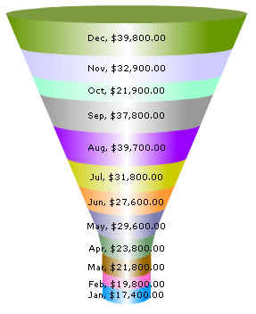

| Funnel Chart > Your First Chart | ||||||||||||||||||||||||||
As a first funnel chart, we'll build one of the most common charts used in business scenarios - monthly comparison of sales for the year. Each funnel segment in the chart would represent a month. The final result would look as under:
|
||||||||||||||||||||||||||
 |
||||||||||||||||||||||||||
| The data table for the above chart is: | ||||||||||||||||||||||||||
|
||||||||||||||||||||||||||
| With the data table in hand, lets now get started with the chart XML. | ||||||||||||||||||||||||||
Creating the chart To start with, we place the <chart> element. If you had a careful look at the charts, you might have seen that all the numeric values on the chart are preceded by a '$' sign. This '$' sign is what is called a number prefix. We add a number prefix using the numberPrefix attribute of the <chart> element. The <chart> element looks as under: |
||||||||||||||||||||||||||
| <chart numberPrefix='$'> | ||||||||||||||||||||||||||
| Now all we need to do is pass the data values to the funnel chart. For each data row, a <set> element is used. Since we have 12 data rows here (for the 12 months), we would be using 12 of those elements. The data row name is passed using the name attribute of the <set> element while the value is passed using the value attribute. And finally, to set the color in which the funnel segment corresponding to the data row would be shown, the color attribute is used. The value of the color attribute should be a hex color code without the '#' sign. A <set> element complete with these attributes would look like: | ||||||||||||||||||||||||||
| <set name='Jan' value='17400' color='0099FF' /> | ||||||||||||||||||||||||||
| The names and values of each data row are displayed on the corresponding funnel segments. | ||||||||||||||||||||||||||
| After putting in 12 <set> elements with their attributes for the 12 months, the chart would be complete and we would just need to stick in the </chart> element. To save you the misery of having to convert all of that tabular data into XML, here you have the final XML: | ||||||||||||||||||||||||||
| <chart numberPrefix='$'> <set name='Jan' value='17400' color='0099FF' /> <set name='Feb' value='19800' color='FF66CC' /> <set name='Mar' value='21800' color='996600' /> <set name='Apr' value='23800' color='669966' /> <set name='May' value='29600' color='7C7CB4' /> <set name='Jun' value='27600' color='FF9933' /> <set name='Jul' value='31800' color='CCCC00' /> <set name='Aug' value='39700' color='9900FF' /> <set name='Sep' value='37800' color='999999' /> <set name='Oct' value='21900' color='99FFCC' /> <set name='Nov' value='32900' color='CCCCFF' /> <set name='Dec' value='39800' color='669900' /> </chart> |
||||||||||||||||||||||||||
So now on your hands, you have your first funnel chart and that too with some very business-like data plotted on it! |
||||||||||||||||||||||||||